Admin Empresas : gestión global del registro
El admin gestiona el conjunto de las empresas registradas en Facil : validación de nuevos registros (con justificantes legales), fusión de duplicados (mismo NIF declarado varias veces), suspensión administrativa (decisión judicial o sanción), gestión del registro mercantil (en sinergia con la Cámara de Comercio).
1. Catálogo global de empresas
La pantalla principal lista todas las empresas registradas con filtros : NIF, nombre, estado (verificada, pendiente, suspendida, archivada), ministerio de tutelle, sector económico. Búsqueda directa por NIF o nombre.
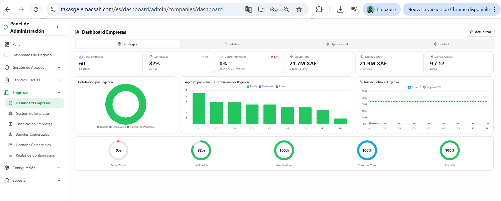
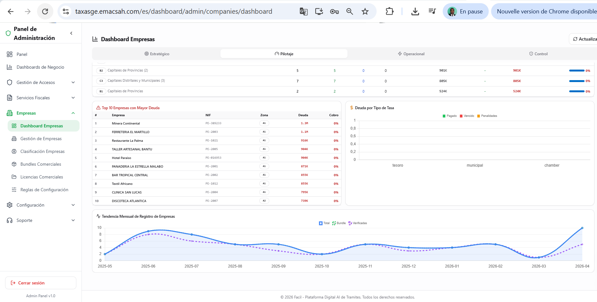
2. Ficha detallada de una empresa
Hacer clic en una empresa abre su ficha detallada con todas sus informaciones : datos administrativos, registro mercantil, licencias comerciales, miembros (con sus roles), histórico de declaraciones fiscales, obligaciones pendientes, audit log de las acciones.
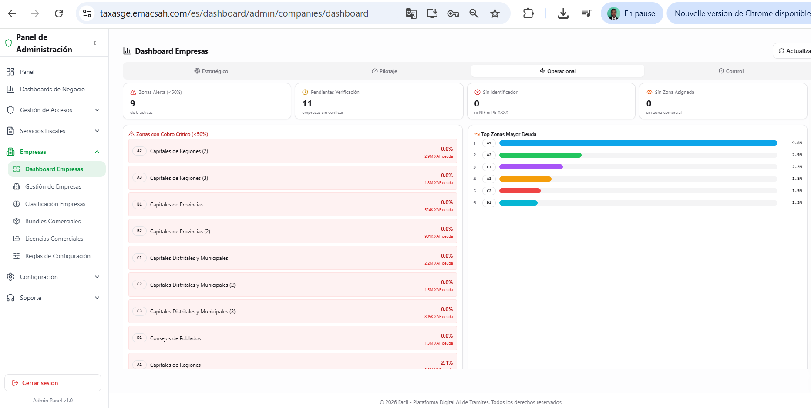
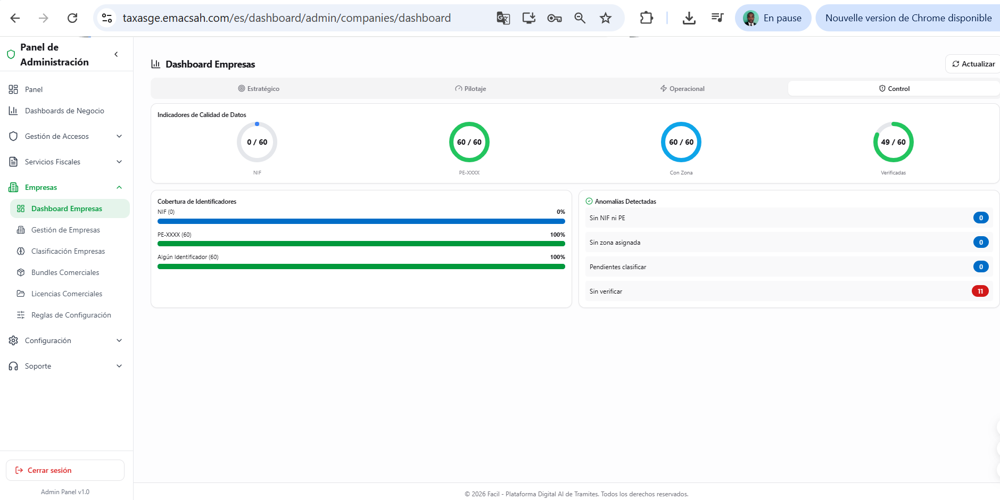
3. Validación de nuevos registros
Cuando un nuevo registro de empresa entra en Facil (vía el flujo « Añadir empresa » desde la cuenta de un usuario), entra en estado «verificación pendiente». El admin (o un delegado de la DGI) revisa los justificantes (acta constitutiva, NIF, certificado registro mercantil, identidad del representante legal) y valida o rechaza con motivo.
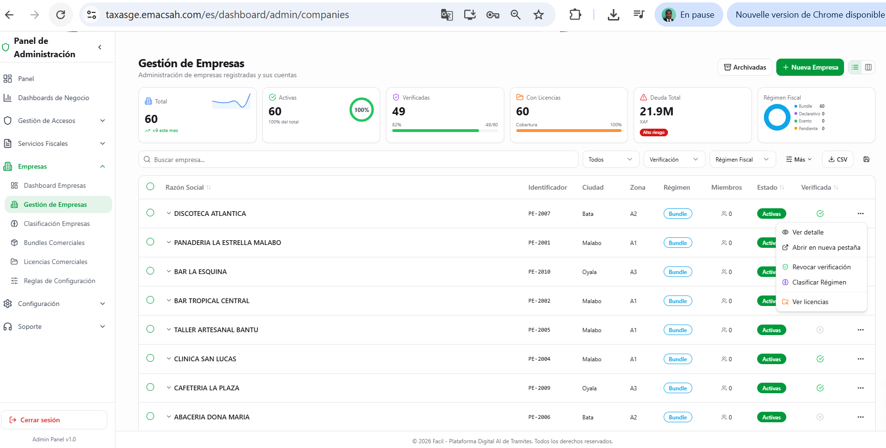
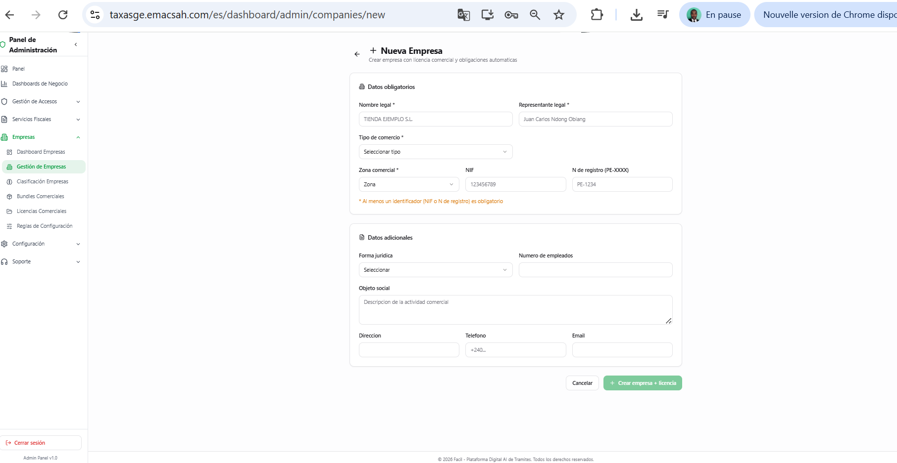
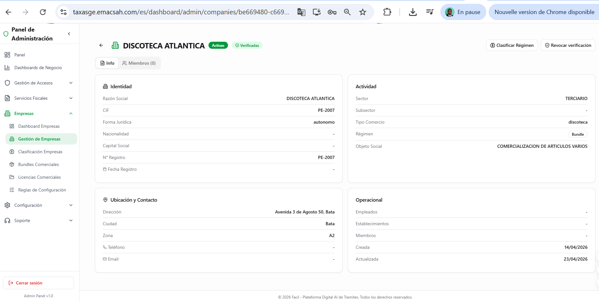
4. Detección y fusión de duplicados
Una empresa puede tener varias entradas erroneas (nombre escrito diferentemente, NIF mal capturado). Facil detecta automáticamente los duplicados sospechosos (mismo NIF, o nombres similares, o misma dirección + responsable legal) y propide su fusión. La fusión preserva los datos de la empresa principal y migra los miembros, licencias, declaraciones del duplicado.
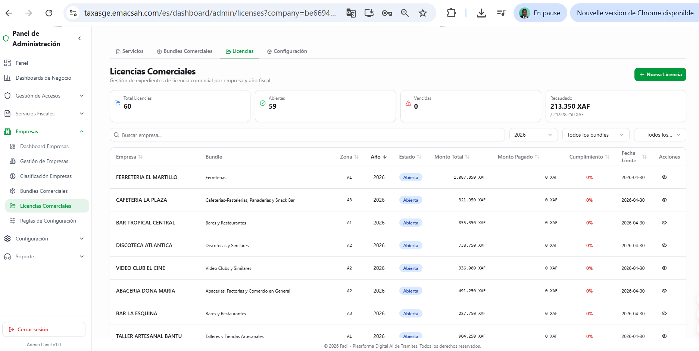
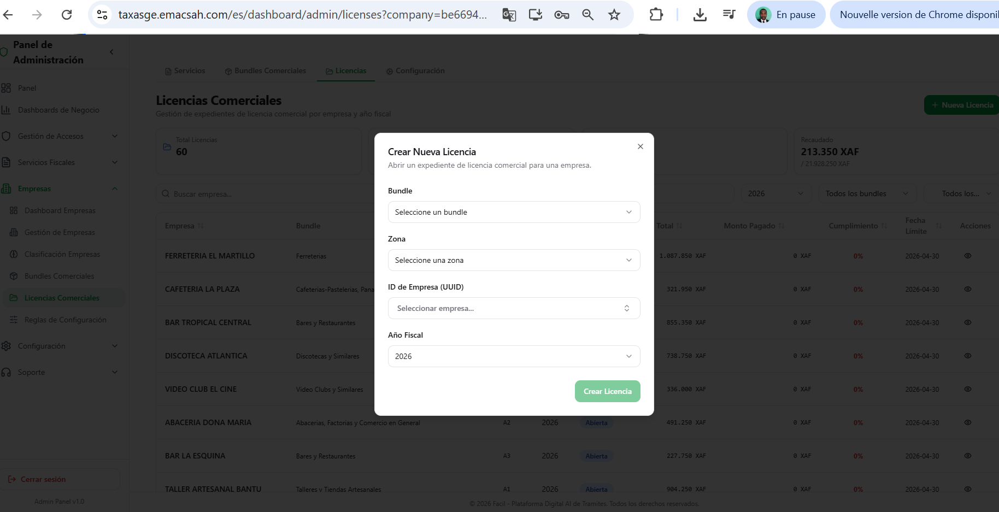
5. Suspensión administrativa
El admin puede suspender una empresa en caso de decisión judicial, sanción fiscal mayor o fraude detectado. La suspensión bloquea todas las acciones de la empresa (no puede iniciar solicitudes, no puede pagar) pero preserva los datos.
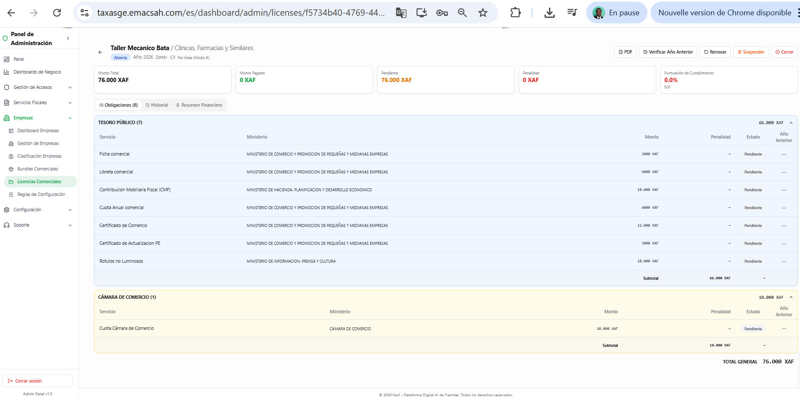
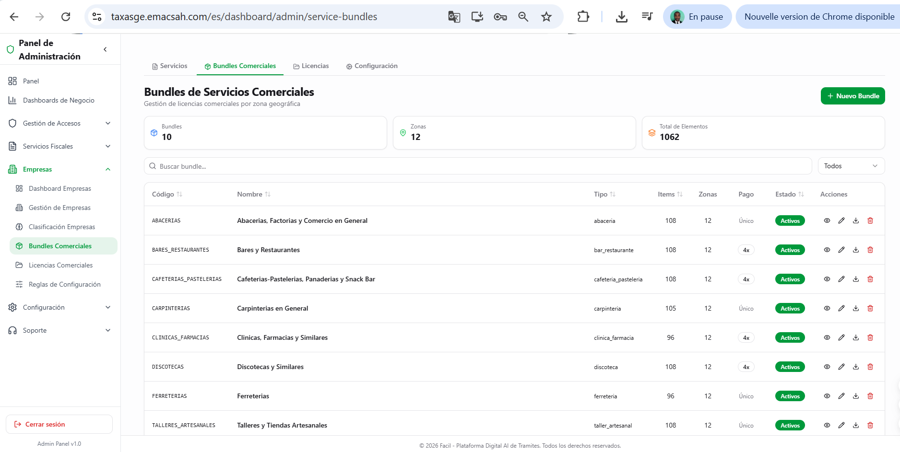
6. Histórico y archivos
Cada empresa tiene un histórico detallado de todas las acciones administrativas que la conciernen : verificaciones, suspensiones, reactivaciones, fusiones, cambios de propietario. Útil para auditorías ministeriales o para reconstituir la cronología de un caso litigieux.
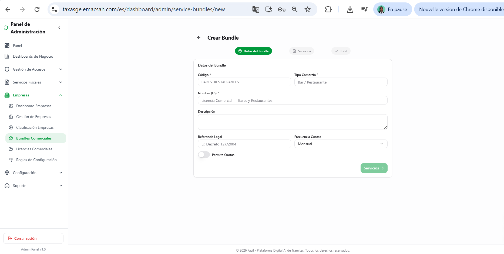
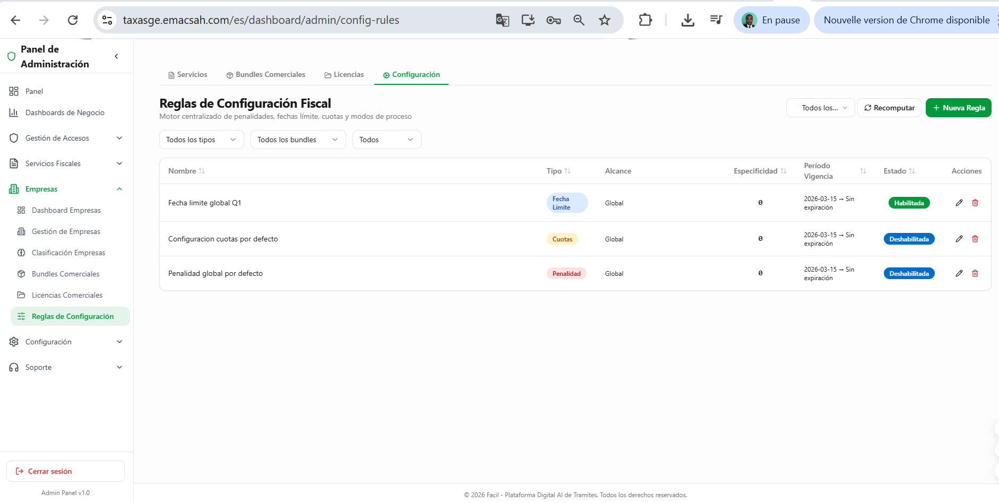
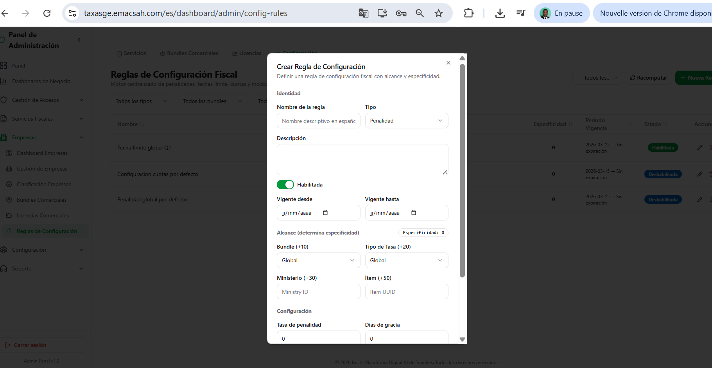